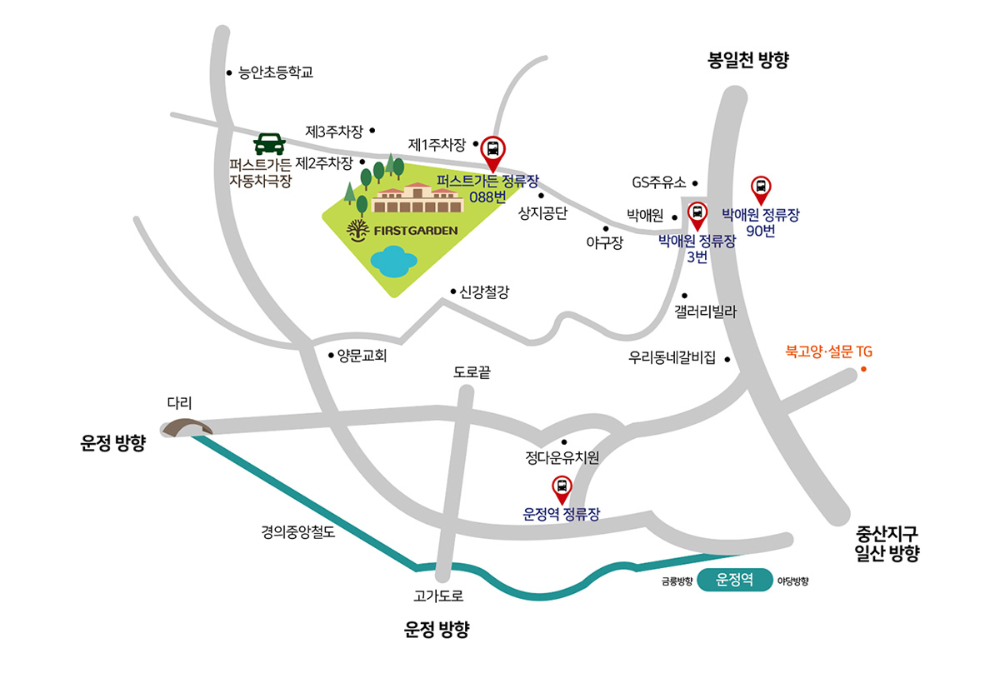

오시는 길
| 주소 | 경기도 파주시 탑삭골길 260 퍼스트가든(상지석동 1021-3) 주차장: 경기도 고양시 일산동구 탑삭골길 273-9(설문동 668) 퍼스트가든은 파주시와 고양시의 경계에 위치하고 있습니다. |
|---|---|
| 연락처 | 031-957-6861 |
| 지하철 이용시 | 3호선 백석역 6번출구 앞 버스정류장(20-335)에서 90번 탑승 → 박애원(20-386) 하차 3호선 마두역 하차후 중앙버스정류장(20-249) → 90번 탑승 → 박애원(20-386) 하차 경의중앙선 운정역 하차(2번출구) 좌측 약 160M 운정역 정류장 → 088번 마을버스 탑승(봉일천 방향, 30-221번 정류장) → 퍼스트가든 하차 |
| 버스 이용시 | - 일반버스 : 3번, 90번 - 하차 정류장 : 박애원(정류장 번호 20-387, 20-386)
- 마을버스 : 088번
088 마을버스는 배차시간이 평일기준 30~40분으로, 운행정보를 꼭 확인하시기 바랍니다.- 하차 정류장 : 퍼스트가든 |
| 자가용 이용시 | 내비게이션에 "퍼스트가든" 검색 조리읍사무소 방향: 조리읍사무소에서 좌측 방향으로 직진 약350m -> 우회전 고봉로 직진 약2.3km -> GS칼텍스 위치에서 우회전 후 박애원 지나서 우회전 후 약 600m 일산 방향: 장항 IC -> 뉴코아 백화점 사거리에서 좌회전 -> 중앙로 따라 1.43km 이동 -> 일산경찰서 지나서 우회전 -> 고봉로 따라서 봉일천 방향으로 7km 이동-> GS칼텍스 위치에서 좌회전 -> 박애원 지나서 우회전 후 약 600m |
